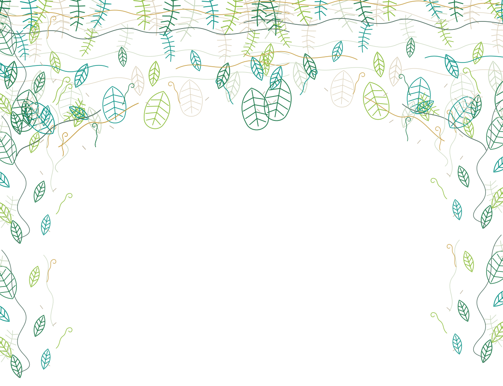

Your Mac's disk,
explained. Then trimmed.
Broza maps every APFS volume, says in plain English what each one is for, and frees space with a dry run first and a 30-day undo.
brew install borlafu/broza/broza
- No network, no telemetry
- System volumes untouchable
- Cloud files never deleted
Free up disk space on your Mac in three commands
Install it, look at what is there, then trim. The trim step is a dry run until you add --apply.
Pick your installer
brew install borlafu/broza/broza
The tap is borlafu/homebrew-broza; brew upgrade keeps it current.
curl --proto '=https' --tlsv1.2 -LsSf https://github.com/borlafu/broza/releases/latest/download/broza-cli-installer.sh | sh
Installs the signed binary from the latest release.
cargo install --locked --git https://github.com/borlafu/broza broza-cli
Builds from source against the committed Cargo.lock.
See where the space went
broza scan
broza suggest
scan maps disks, containers and volumes. suggest groups what can go by risk level.
Dry run, then apply
broza clean --risk green
broza clean --risk green --apply
The first command changes nothing. The second asks you to confirm, then moves items to quarantine.
Requires macOS 26 or 27 on Apple Silicon. Full Disk Access is optional: without it Broza scans what it can and tells you what it skipped.
Live session
What a full pass actually looks like
Scan, suggest, dry run, apply — real output from the CLI, replayed at the speed it runs.
$ broza scan Physical disk disk0 — APPLE SSD AP1024Z (1.00 TB) └─ APFS container disk3 (994.7 GB) ├─ Used 812.4 GB ████████████████░░░░ 81.7% ├─ Free 98.1 GB └─ Purgeable 84.1 GB ← estimate; macOS shows this as "available" Volumes in this container: ┌ Macintosh HD System 11.3 GB read-only, sealed ├ Macintosh HD - Data Data 798.2 GB ← your data ├ Preboot Preboot 6.5 GB ├ Recovery Recovery 1.2 GB └ VM VM 3.0 GB swap Largest consumers on Macintosh HD - Data: 312.4 GB ~/Library/Developer/Xcode/DerivedData/ 84.1 GB ~/Library/Caches/ 61.7 GB ~/Documents/ $ broza suggest Potentially reclaimable space: 234.3 GB Reported, not reclaimable by Broza: 51.1 GB SAFE (green) — 138.2 GB build-cache 121.4 GB Xcode DerivedData (94.2 GB), Python bytecode caches (27.2 GB) user-cache 16.8 GB Application caches (16.8 GB) REVIEW (amber) — 96.1 GB duplicates 52.3 GB Duplicate files (52.3 GB) unused-apps 28.7 GB 6 apps not opened in more than 1 year old-backups 15.1 GB 2 iPhone backups from 2023 build-cache 0 B Docker Desktop disk image: 38.6 GB — inform only, see: broza explain build-cache snapshots 0 B 4 Time Machine local snapshots (size not reported by macOS) INFO ONLY (red) — 0 B cloud-synced 0 B Already backed up in iCloud Drive: 12.5 GB — inform only, see: broza explain cloud-synced Next step: broza clean --risk green (dry run, deletes nothing) broza clean --risk green --apply (moves to quarantine; space is freed after expiry or purge) $ broza clean --risk green Dry run: nothing was changed. Would move to quarantine 5122 item(s), 21.6 GB in all: planned 3.0 GB ~/Library/Caches/Google planned 2.3 GB ~/Library/Caches/pnpm planned 1.9 GB ~/Library/Caches/Homebrew … and 5119 more Next step: broza clean --risk green --apply (moves to quarantine; `broza restore` brings items back until they expire) $ broza clean --risk green --apply 5122 items (21.6 GB), risk SAFE. ~/Library/Caches/Google ~/Library/Caches/pnpm ~/Library/Caches/Homebrew ~/Library/Caches/Yarn ~/Library/Caches/go-build Proceed? [y/N] y Session cln_20260921103608_a1b2: 5122 item(s) moved to quarantine, 21.6 GB pending (freed after expiry or purge). Quarantine: ~/.local/share/broza/quarantine/cln_20260921103608_a1b2 Undo: broza restore --session cln_20260921103608_a1b2
What it does
An honest map, then a careful trim
Honest map
Physical disks, APFS containers, volumes and their roles, and local snapshots. Purgeable space is never added to free space.
Plain English
broza explain answers three questions for any volume, path or category: what it is, what it is for, and whether it is safe to touch.
Risk-ranked
Ten detectors, sorted into SAFE, REVIEW and INFO ONLY. The label is always written out, so colour is never the only signal.
Dry run first
Nothing is written without --apply, and the System, Preboot, Recovery and VM volumes are never written at all. There is no flag to change that.
30-day undo
Deletions are moves. Items sit in quarantine for 30 days and broza restore puts them back exactly where they were.
Scriptable
Every command has --json with a versioned envelope, stable exit codes 0–9, and no prompt when there is no terminal.
Detectors
What Broza cleans: developer caches, snapshots, backups, duplicates
Category ids are stable and usable in scripts, with --category and --risk. Linked ids have a plain-English guide.
| Category | Risk | What it finds |
|---|---|---|
| user-cache | SAFE | Application caches, logs and incomplete downloads under ~/Library. Regenerated on demand. |
| build-cache | SAFE REVIEW | Build artefacts: DerivedData, Archives, orphan node_modules, __pycache__, .gradle, target/. |
| ios-simulators | REVIEW | Unused iOS simulator runtimes and simulated devices installed by Xcode. |
| trash | REVIEW | The Trash of every mounted volume. Emptying it is irreversible. |
| snapshots | REVIEW | APFS local snapshots (Time Machine, OS update). Managed only via tmutil; sizes not reported by macOS. |
| old-backups | REVIEW | iPhone and iPad backups under ~/Library/Application Support/MobileSync/Backup. |
| unused-apps | REVIEW INFO ONLY | Applications not opened past the threshold, plus their leftovers in ~/Library. |
| cloud-synced | INFO ONLY | Files already synced to iCloud Drive, Dropbox, OneDrive or Google Drive. Reported only, never deleted. |
| duplicates | REVIEW | Groups of byte-identical files, confirmed by a full content hash. |
| large-old-files | REVIEW | Large files not opened for a long time, ranked by size. |
Safety
Rules that no flag can turn off
- Dry run by default.
broza cleanonly simulates. Nothing changes without--apply. - Quarantine by default.
Every deletion is a move. Irreversible deletion needs
--purgeand the wordPURGEtyped in full;--yesdoes not skip it. - Protected volumes are read-only.
Broza never writes to the System, Preboot, Recovery or VM volumes, and there is no flag that allows it.
- Cloud files are reported, never deleted.
Files already synced to iCloud Drive, Dropbox, OneDrive or Google Drive are listed with the provider's own steps for freeing them.
These are enforced by the type system, not by discipline: every mutating function requires an Approved<_> token that only crates/broza/src/safety/guard.rs can construct, so grep -rn "Approved<" crates/ is the whole audit surface.
Free, open source, and staying that way
Broza is MIT-licensed. If it saved you space you can leave a tip — it is a donation, nothing is sold and nothing is unlocked.